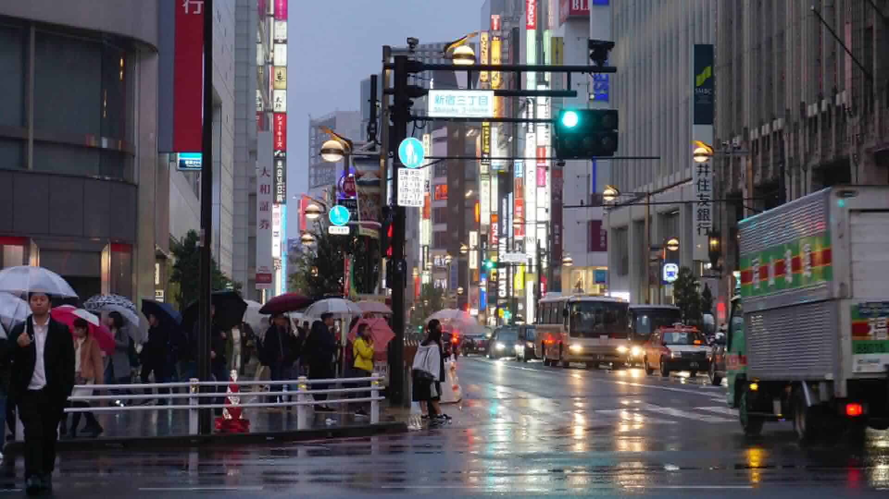
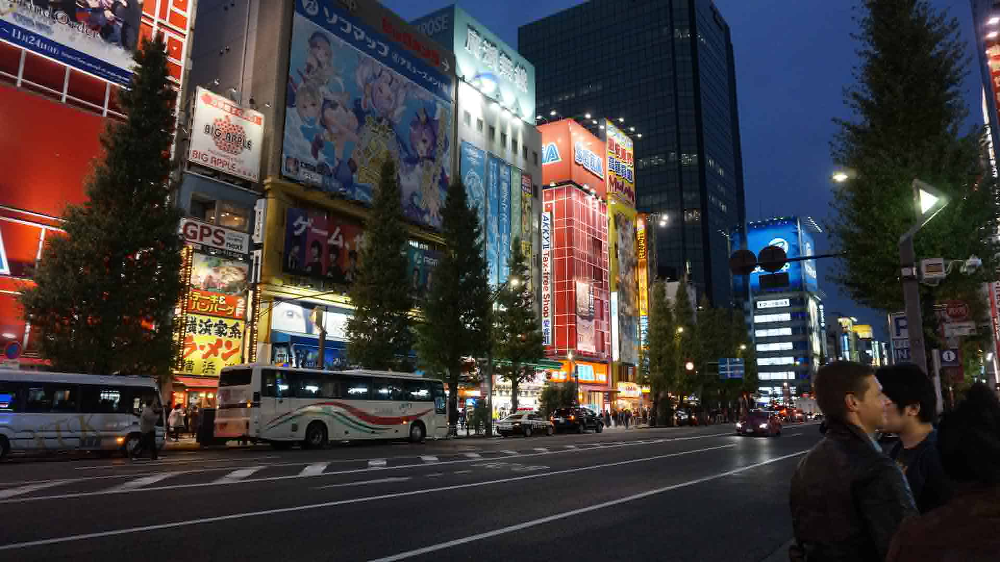
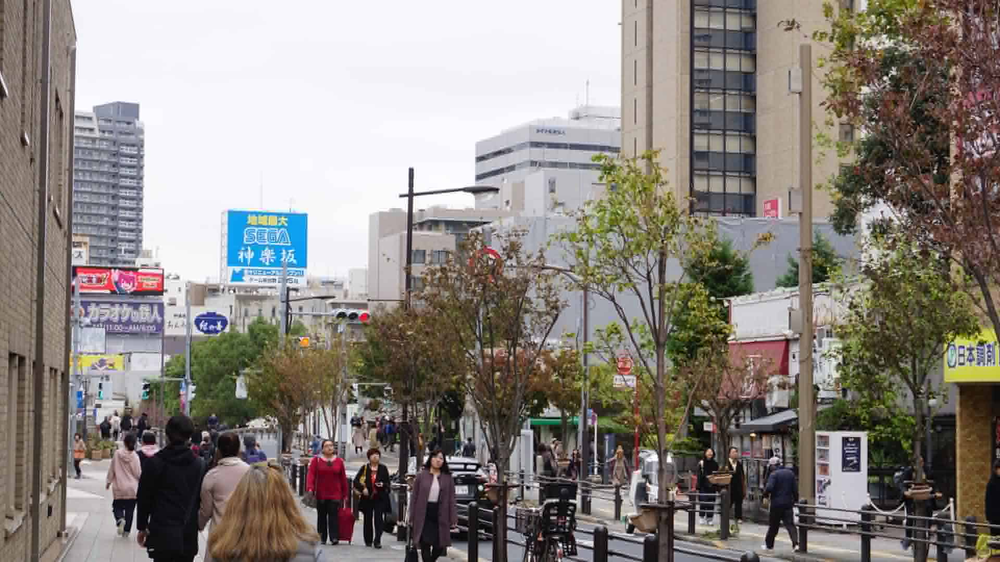

Hi there
My name is Steven and this is my Web Systems Website. I am currently studying IT at the University of Technology Sydney. Feel free to look around and know more about me. I hope you enjoy!
About Me.
Hobbies
Outside of my studies I love exploring all sorts of hobbies. From playing basketball, games, watching anime, or finding the best places to eat, I'm always keen to try new things!
What I've been up to
Before COVID 19, me and some Friends went to Tokyo. It was so memorable! Japan has some of the most beautiful sceneries, along with great food and the people are amazing.


